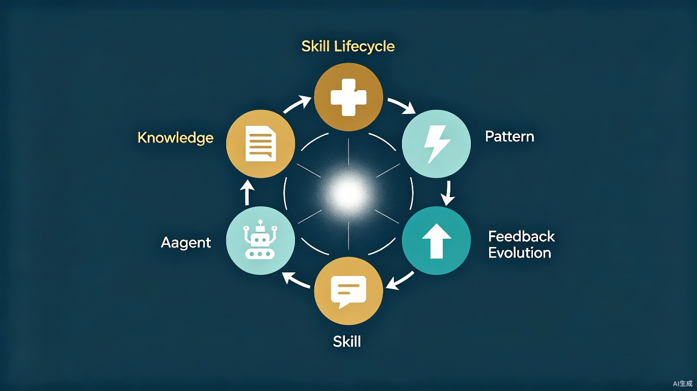
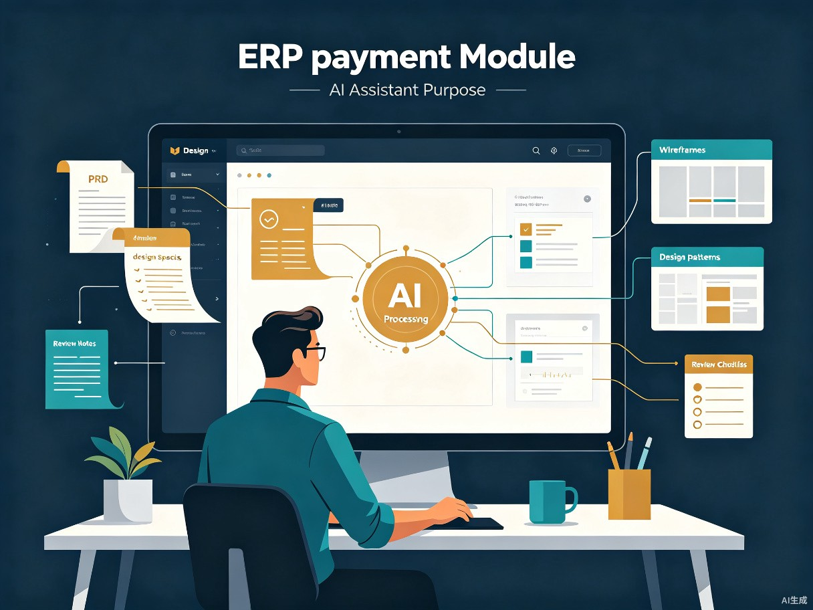

Skill Forge
AI Product & Design Skill Workspace
Build AI Skills That Grow with Your Team
让团队经验，持续成长为 AI Skill。
AI 每次都像第一次接触这个项目
产品团队每天都在写 PRD。设计团队每天都在维护规范。但 AI 每次都像第一次接触这个项目。
不是不会写 Prompt。而是团队经验无法持续积累。
知识库回答"有什么"，Skill 回答"应该怎么做"。
目前团队知识大量沉淀在 PRD、设计稿、会议记录和项目文档中，经验无法复用，AI 每次都需要重新理解业务。团队成员更换后，大量经验随人员流失；每个项目都重复分析需求、重复搭建 Prompt、重复整理规范，效率低且输出质量不稳定。
我们真正需要的不是"如何写一个更好的 Prompt"，而是如何帮助团队把经验沉淀成可以持续进化的 AI 能力。
把团队经验锻造成 AI 可以执行的能力
Skill Forge 是一个帮助产品和设计团队，把 PRD、设计规范、项目案例自动沉淀为 AI Skill 的工作平台。
它不是知识库。也不是 Prompt 管理器。它生产的是可以持续成长的 Skill。
Skill Lifecycle：让 AI 继承团队能力
大多数 AI 产品做到 Prompt 或 Agent 就结束了。Skill Forge 第一次提出：Skill 是一个会成长的资产。

AI 不应该只生成内容，更应该继承团队能力。
Skill 不是用一次就丢的 Prompt，而是越用越强的团队资产。每一次调用都在积累经验，每一次反馈都在推动进化。
| 阶段 | 特征 | 类比 |
|---|---|---|
| v0.1 | 基于文档生成，能完成基础任务 | 实习生 |
| v1.0 | 经过多次项目验证，输出稳定 | 熟练设计师 |
| v2.0 | 吸收团队反馈，能预判风险 | 资深专家 |
Skill 进化 = 执行次数 × 反馈质量。随着项目不断推进，Skill 会持续学习和迭代，逐渐形成团队自己的 AI 工作方式。
一个设计师接手 ERP 支付模块的七天

以前：每个项目都像重新开始。
现在：每个项目都站在团队的肩膀上。
聚焦，然后做好
第一版产品边界
Design Skill
第一版只做一件事：让团队的核心知识变成可调用的 AI Skill，并在 TRAE 中真正跑起来。
TRAE 是 Skill 的运行环境
为什么一定是 TRAE？
现有 AI 工具只能消费 Prompt。Skill Forge 希望生产 Skill。
而 TRAE 提供了从 Product Planning → Design → Coding 的完整工作流。
Skill 在 TRAE 中不断被调用、不断被反馈、不断成长。
TRAE 是目前唯一能同时覆盖 Skill 生产 + Skill 消费 + Skill 反馈回流的 IDE。
产品经理在 TRAE 里写 PRD → Skill Forge 生成 Product Skill → 同一个 TRAE 窗口里，设计师调用 Skill 做设计 → 设计产出再沉淀为 Design Skill。不用切换工具，整个 Lifecycle 在一个 IDE 内完成。
TRAE 是 Skill 的运行环境。Skill Forge 是 Skill 的生产工厂。
两者共同组成 Skill Lifecycle。
让团队经验成长为 AI 能力
Skill Forge 不是又一个 AI 工具。它是一套让团队经验从静态文档变为动态 AI 能力的方法论和平台。
通过 Skill Lifecycle——知识 → 模式 → 能力 → 执行 → 反馈 → 进化，团队不再每次从零开始，而是让 AI 真正继承和延续团队能力。
这不是关于如何写一个更好的 Prompt。这是关于如何让 AI 成为团队的一部分。
Build AI Skills That Grow with Your Team.
让团队经验，持续成长为 AI Skill。